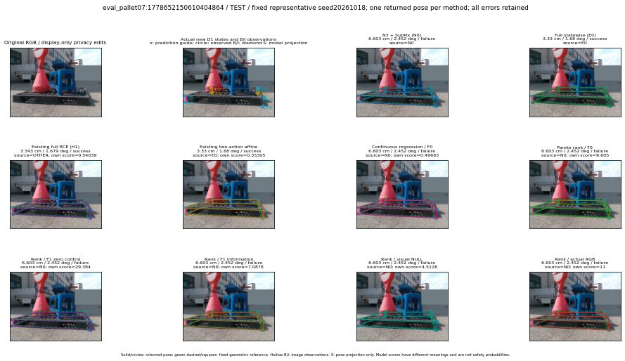

실선은 반환 자세, 초록 점선은 고정 기하 참조입니다. S는 영상 관측이 아닙니다. 점수는 모델별 의미가 다르며 보정된 안전 확률이 아닙니다. 개인정보 처리는 표시 사본에만 적용했습니다.
| 방법·seed | 위치 / 회전 / 공동성공 | 실제 출처 | 선택 후보 | 각 모델 자체 점수 |
|---|---|---|---|---|
| N0 | 6.603 cm / 2.452 deg / failure | N0 | N/A | N/A |
| E0 | 3.33 cm / 1.68 deg / success | E0 | N/A | N/A |
| E0_REGENERATED | 3.33 cm / 1.68 deg / success | E0 | E0_REGENERATED | N/A |
| POSEFIX_SUBPIX_PF_ANCHOR | 6.231 cm / 2.056 deg / failure | OTHER | N/A | N/A |
| POSEFIX_SUBPIX_YOLO_ANCHOR | 6.284 cm / 2.056 deg / failure | OTHER | N/A | N/A |
| D1_H1_MLP_s20261018 | 3.343 cm / 1.679 deg / success | OTHER | G10/ORIGINAL_WD/selected | 0.5403915643692017 |
| D1_H1_MLP_s20261019 | 3.343 cm / 1.679 deg / success | OTHER | G10/ORIGINAL_WD/selected | 0.5590309500694275 |
| D1_H1_MLP_s20261020 | 3.343 cm / 1.679 deg / success | OTHER | G10/ORIGINAL_WD/selected | 0.11835259199142456 |
| D1_H1_PAIR_MLP_s20261018 | 6.603 cm / 2.452 deg / failure | N0 | N0 | -0.3422631025314331 |
| D1_H1_PAIR_MLP_s20261019 | 6.603 cm / 2.452 deg / failure | N0 | N0 | 0.35876262187957764 |
| D1_H1_PAIR_MLP_s20261020 | 6.603 cm / 2.452 deg / failure | N0 | N0 | 0.5161165595054626 |
| D1_H1_PAIR_ROLE_AFFINE_s20261018 | 3.33 cm / 1.68 deg / success | E0 | E0_REGENERATED | 0.3530518710613251 |
| D1_H1_PAIR_ROLE_AFFINE_s20261019 | 3.33 cm / 1.68 deg / success | E0 | E0_REGENERATED | 0.43737849593162537 |
| D1_H1_PAIR_ROLE_AFFINE_s20261020 | 3.33 cm / 1.68 deg / success | E0 | E0_REGENERATED | 0.34293776750564575 |
| R_CONT_F0_s20261018 | 6.603 cm / 2.452 deg / failure | N0 | N0 | 0.49683257937431335 |
| R_CONT_F0_s20261019 | 3.343 cm / 1.679 deg / success | OTHER | G10/ORIGINAL_WD/selected | 0.5958979725837708 |
| R_CONT_F0_s20261020 | 6.603 cm / 2.452 deg / failure | N0 | N0 | 0.6521878838539124 |
| R_ORDER_F0_s20261018 | 6.603 cm / 2.452 deg / failure | N0 | N0 | 9.605008125305176 |
| R_ORDER_F0_s20261019 | 6.603 cm / 2.452 deg / failure | N0 | N0 | 8.287461280822754 |
| R_ORDER_F0_s20261020 | 6.603 cm / 2.452 deg / failure | N0 | N0 | -7.236677169799805 |
| R_ORDER_F1_ZERO_s20261018 | 6.603 cm / 2.452 deg / failure | N0 | N0 | 29.384017944335938 |
| R_ORDER_F1_ZERO_s20261019 | 6.603 cm / 2.452 deg / failure | N0 | N0 | 30.218280792236328 |
| R_ORDER_F1_ZERO_s20261020 | 6.603 cm / 2.452 deg / failure | N0 | N0 | 12.370219230651855 |
| R_ORDER_F1_s20261018 | 6.603 cm / 2.452 deg / failure | N0 | N0 | 7.087756633758545 |
| R_ORDER_F1_s20261019 | 6.603 cm / 2.452 deg / failure | N0 | N0 | 7.719992160797119 |
| R_ORDER_F1_s20261020 | 6.603 cm / 2.452 deg / failure | N0 | N0 | 4.518584251403809 |
| V_ORDER_NULL_s20261018 | 6.603 cm / 2.452 deg / failure | N0 | N0 | 4.512603759765625 |
| V_ORDER_NULL_s20261019 | 6.603 cm / 2.452 deg / failure | N0 | N0 | 3.1375575065612793 |
| V_ORDER_NULL_s20261020 | 6.603 cm / 2.452 deg / failure | N0 | N0 | 5.356720924377441 |
| V_ORDER_RGB_s20261018 | 6.603 cm / 2.452 deg / failure | N0 | N0 | 10.999503135681152 |
| V_ORDER_RGB_s20261019 | 6.603 cm / 2.452 deg / failure | N0 | N0 | 3.429492950439453 |
| V_ORDER_RGB_s20261020 | 6.603 cm / 2.452 deg / failure | N0 | N0 | -5.507512092590332 |